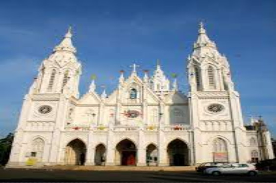
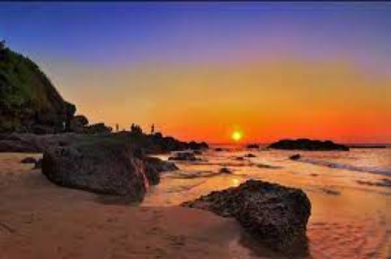

The heart-shaped lake you might be referring to in the context of Morni Hills is Tikkar Taal. While not perfectly heart-shaped, it's one of the two interconnected lakes in the region, known for its scenic beauty and serene atmosphere. The other lake is called Chota Tikkar Taal (Small Tikkar Lake). These lakes are among the primary attractions in Morni Hills, offering visitors picturesque views and a peaceful environment.
Tikkar Taal, along with its companion, is nestled amidst the lush greenery of the Morni Hills. The area around the lakes is ideal for picnics, camping, and nature walks. The unique topography and the tranquility of the water bodies attract tourists seeking a respite from the hustle and bustle of city life.
The Three Kings Church

The Three Kings Church, more formally known as the Church of Our Lady of Remedios, is situated in the small village of Cansaulim in South Goa, India. This historic church is famous for its association with a local legend that adds a mysterious allure to its serene surroundings.
According to popular lore, the church is named after three Portuguese kings who are said to have fatally poisoned each other in a dispute over who would rule the area. The bodies of these kings were reportedly interred within the church premises.
Aguada Fort Sunset Point

Aguada Fort, located in Goa, India, is a well-preserved 17th-century Portuguese fort that stands at the confluence of the Mandovi River and the Arabian Sea. The fort was constructed in 1612 to guard against the Dutch and the Marathas. It was a pivotal point for the Portuguese to defend their territory and also served as a reference point for vessels coming from Europe at that time.
The Aguada Fort Sunset Point refers to the spots around the fort that offer stunning views of the sunset over the Arabian Sea. The fort's unique location on a hilltop means visitors can enjoy panoramic views of the Goan coastline and the vast sea stretching into the horizon. The Kamadgiri Hill, Hanuman Dhara, Ramghat, and Bharat Milap Temple are some of the important religious sites in the town.